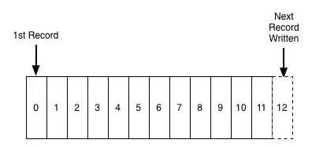
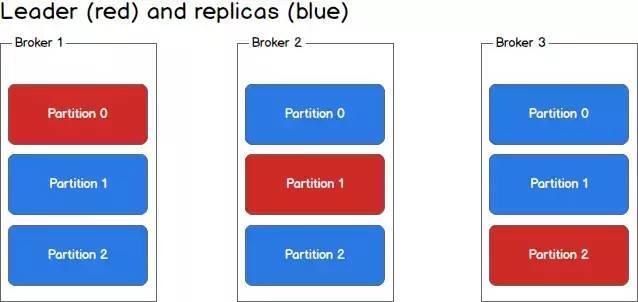

原文连接:https://www.cnblogs.com/javazhiyin/p/11433380.html
作者：柳树之
www.jianshu.com/p/7b77723d4f96
Kafka是啥？用Kafka官方的话来说就是：
Kafka is used for building real-time data pipelines and streaming apps. It is horizontally scalable, fault-tolerant, wicked fast, and runs in production in thousands of companies.
大致的意思就是，这是一个实时数据处理系统，可以横向扩展、高可靠，而且还变态快，已经被很多公司使用。
那么什么是实时数据处理系统呢？顾名思义，实时数据处理系统就是数据一旦产生，就要能快速进行处理的系统。
对于实时数据处理，我们最常见的，就是消息中间件了，也叫MQ（Message Queue，消息队列），也有叫Message Broker的。
这篇文章，我将从消息中间件的角度，带大家看看Kafka的内部结构，看看它是如何做到横向扩展、高可靠的同时，还能变态快的。
为什么需要消息中间件
消息中间件的作用主要有两点：
-
解耦消息的生产和消费。
-
缓冲。
想象一个场景，你的一个创建订单的操作，在订单创建完成之后，需要触发一系列其他的操作，比如进行用户订单数据的统计、给用户发送短信、给用户发送邮件等等，就像这样：
createOrder(...){
...
statOrderData(...);
sendSMS();
sendEmail();
}
代码这样写似乎没什么问题，可是过了一段时间，你给系统引进了一个用户行为分析服务，它也需要在订单创建完成之后，进行一个分析用户行为的操作，而且随着系统的逐渐壮大，创建订单之后要触发的操作也就越来越多，代码也渐渐膨胀成这样：
createOrder(...){
...
statOrderData(...);
sendSMS();
sendEmail();
// new operation
statUserBehavior(...);
doXXX(...);
doYYY(...);
// more and more operations
...
}
导致代码越来越膨胀的症结在于，消息的生产和消费耦合在一起了。createOrder方法不仅仅要负责生产“订单已创建”这条消息，还要负责处理这条消息。
这就好比BBC的记者，在知道皇马拿到欧冠冠军之后，拿起手机，翻开皇马球迷通讯录，给球迷一个一个打电话，告诉他们，皇马夺冠了。
事实上，BBC的记者只需要在他们官网发布这条消息，然后球迷自行访问BBC，去上面获取这条新闻；又或者球迷订阅了BBC，那么订阅系统会主动把发布在官网的消息推送给球迷。
同样，createOrder也需要一个像BBC官网那样的载体，也就是消息中间件，在订单创建完成之后，把一条主题为“orderCreated”的消息，放到消息中间件去就ok了，不必关心需要把这条消息发给谁。这就完成了消息的生产。
至于需要在订单创建完成之后触发操作的服务，则只需要订阅主题为“orderCreated”的消息，在消息中间件出现新的“orderCreated”消息时，就会收到这条消息，然后进行相应的处理。
因此，通过使用消息中间件，上面的代码也就简化成了：
createOrder(...){
...
sendOrderCreatedMessage(...);
}
以后如果在订单创建之后有新的操作需要执行，这串代码也不需要修改，只需要给对消息进行订阅即可。
另外，通过这样的解耦，消费者在消费数据时更加的灵活，不必每次消息一产生就要马上去处理（虽然通常消费者侧也会有线程池等缓冲机制），可以等自己有空了的时候，再过来消息中间件这里取数据进行处理。这就是消息中间件带来的缓冲作用。
Kafka一代 - 消息队列
从上面的描述，我们可以看出，消息中间件之所以可以解耦消息的生产和消费，主要是它提供了一个存放消息的地方——生产者把消息放进来，消费者在从中取出消息进行处理。
那么这个存放消息的地方，应该采用什么数据结构呢？
在绝大多数情况下，我们都希望先发送进来的消息，可以先被处理（FIFO），这符合大多数的业务逻辑，少数情况下我们会给消息设置优先级。不管怎样，对于消息中间件来说，一个先进先出的队列，是非常合适的数据结构：

那么要怎样保证消息可以被顺序消费呢？
消费者过来获取消息时，每次都把index=0的数据返回过去，然后再删除index=0的那条数据？
很明显不行，因为订阅了这条消息的消费者数量，可能是0，也可能是1，还可能大于1。如果每次消费完就删除了，那么其他订阅了这条消息的消费者就获取不到这条消息了。
事实上，Kafka会对数据进行持久化存储（至于存放多长时间，这是可以配置的），消费者端会记录一个offset，表明该消费者当前消费到哪条数据，所以下次消费者想继续消费，只需从offset+1的位置继续消费就好了。
消费者甚至可以通过调整offset的值，重新消费以前的数据。
那么这就是Kafka了吗？不，这只是一条非常普通的消息队列，我们姑且叫它为Kafka一代吧。
这个Kafka一代用一条消息队列实现了消息中间件，这样的简单实现存在不少问题：
-
Topic鱼龙混杂。想象一下，一个只订阅了topic为“A”的消费者，却要在一条有ABCDEFG…等各种各样topic的队列里头去寻找topic为A的消息，这样性能岂不是很慢？
-
吞吐量低。我们把全部消息都放在一条队列了，请求一多，它肯定应付不过来。
由此就引申出了Kafka二代。
Kafka二代 - Partition
要解决Kafka一代的那两个问题，很简单——分布存储。
二代Kafka引入了Partition的概念，也就是采用多条队列， 每条队列里面的消息都是相同的topic：
Partition的设计解决了上面提到的两个问题：

-
纯Topic队列。一个队列只有一种topic，消费者再也不用担心会碰到不是自己想要的topic的消息了。
-
提高吞吐量。不同topic的消息交给不同队列去存储，再也不用以一敌十了。
一个队列只有一种topic，但是一种topic的消息却可以根据自定义的key值，分散到多条队列中。也就是说，上图的p1和p2，可以都是同一种topic的队列。不过这是属于比较高级的应用了，以后有机会再和大家讨论。
Kafka二代足够完美了吗？当然不是，我们虽然通过Partition提升了性能，但是我们忽略了一个很重要的问题——高可用。
万一机器挂掉了怎么办？单点系统总是不可靠的。我们必须考虑备用节点和数据备份的问题。
Kafka三代 - Broker集群
很明显，为了解决高可用问题，我们需要集群。
Kafka对集群的支持也是非常友好的。在Kafka中，集群里的每个实例叫做Broker，就像这样：

每个partition不再只有一个，而是有一个leader(红色)和多个replica(蓝色)，生产者根据消息的topic和key值，确定了消息要发往哪个partition之后（假设是p1），会找到partition对应的leader(也就是broker2里的p1)，然后将消息发给leader，leader负责消息的写入，并与其余的replica进行同步。
一旦某一个partition的leader挂掉了，那么只需提拔一个replica出来，让它成为leader就ok了，系统依旧可以正常运行。
通过Broker集群的设计，我们不仅解决了系统高可用的问题，还进一步提升了系统的吞吐量，因为replica同样可以为消费者提供数据查找的功能。
Kafka没那么简单
这篇文章只是带大家初步认识一下Kafka，很多细节并没有深入讨论，比如：
1、Kafka的消息结构？
我们只知道Kafka内部是一个消息队列，但是队列里的元素长什么样，包含了哪些消息呢？
参考：
http://kafka.apache.org/documentation/#messageformat
2、Zookeeper和Kafka的关系？
如果玩过Kafka的Quick Start教程，就会发现，我们在使用Kafka时，需要先启动一个ZK，那么这个ZK的作用到底是什么呢？
参考：
https://www.quora.com/What-is-the-actual-role-of-Zookeeper-in-Kafka-What-benefits-will-I-miss-out-on-if-I-don%E2%80%99t-use-Zookeeper-and-Kafka-together
3、数据可靠性和重复消费
生产者把消息发给Kafka，发送过程中挂掉、或者Kafka保存消息时发送异常怎么办？
同理，消费者获取消费时发生异常怎么办？
甚至，如果消费者已经消费了数据，但是修改offset时失败了，导致重复消费怎么办？
等等这些异常场景，都是Kafka需要考虑的。
参考：
http://kafka.apache.org/documentation/#semantics
4、pull or push
消费者侧在获取消息时，是通过主动去pull消息呢？还是由Kafka给消费者push消息？
这两种方式各自有什么优劣？
参考：
http://kafka.apache.org/documentation/#design_pull
5、如何提高消费者处理性能
还是之前的订单创建的例子，订单创建后，你要给用户发送短信，现在你发现由于你只有一个消费者在发送短信，忙不过来，怎么办？这就有了Kafka里头的消费者组（Consumer Group）的设计。
参考：
https://dzone.com/articles/understanding-kafka-consumer-groups-and-consumer-l
终极问题：一条消息从生产，到被消费，完整流程是怎样的？
如果能详尽透彻地回答这个问题，那你对Kafka的理解也就非常深入了。
总结
本文从一个演化的视角，带大家在Kafka的后花园里走马观花，逛了一圈。
很多细节并没有深入讨论，只是一个引子，希望能起到抛砖引玉的作用。
参考文献&学习资源
官网：
http://kafka.apache.org/
http://kafka.apache.org/intro
http://kafka.apache.org/documentation
一些不错的博客：
https://sookocheff.com/post/kafka/kafka-in-a-nutshell/
https://engineering.linkedin.com/distributed-systems/log-what-every-software-engineer-should-know-about-real-time-datas-unifying
https://www.confluent.io/blog/how-to-choose-the-number-of-topicspartitions-in-a-kafka-cluster/
书籍（没看过，但是感觉不错的书）：
Kafka权威指南
Apache Kafka源码剖析（
推荐阅读(点击即可跳转阅读)
2. 面试题内容聚合
3. 设计模式内容聚合
4. Mybatis内容聚合
5. 多线程内容聚合